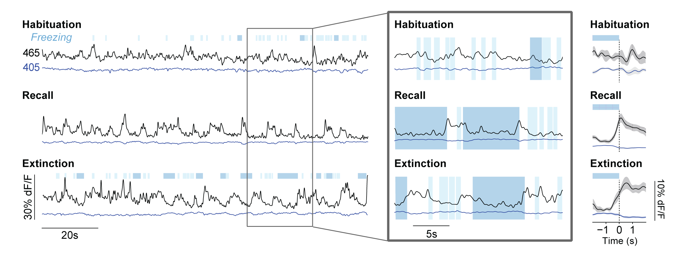

A thalamo-amygdalar circuit underlying the extinction of remote fear memories
Bianca A. Silva, Simone Astori, Allison M. Burns, Hendrik Heiser, Lukas van den Heuvel, Giulia Santoni, Maria Fernanda Martinez-Reza, Carmen Sandi, Johannes Gräff
 Fear and trauma generate some of the longest-lived memories. Despite the corresponding need to understand how such memories can be attenuated, the underlying brain circuits remain unknown. Here, combining viral tracing, neuronal activity mapping, fiber photometry, chemogenetic and closed-loop optogenetic manipulations in mice, we show that the extinction of remote (30-day-old) fear memories depends on thalamic nucleus reuniens (NRe) inputs to the basolateral amygdala (BLA). We found that remote, but not recent (1-day-old), fear extinction activates NRe-to-BLA inputs, which become potentiated upon fear reduction. Furthermore, both monosynaptic NRe-to-BLA and total NRe activity increase shortly before freezing cessation, suggesting that the NRe registers and transmits safety signals to the BLA. Accordingly, pan-NRe and pathway-specific NRe-to-BLA inhibition impairs, whereas their activation facilitates, remote fear extinction. These findings identify the NRe as a crucial BLA regulator for extinction and provide the first functional description of the circuits underlying the attenuation of consolidated fear memories.
- Posted on:
- May 20, 2021
- Length:
- 1 minute read, 151 words
- Categories:
- remote fear memory NAc extinction
- See Also: